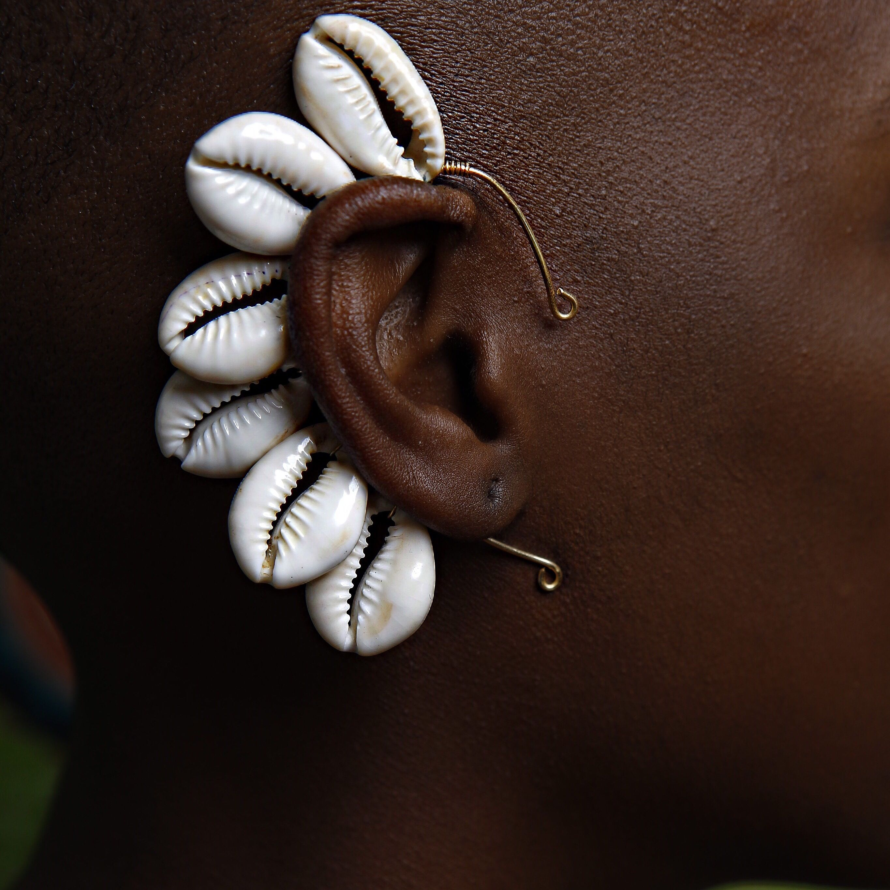
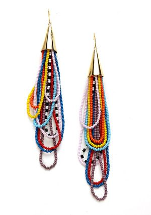
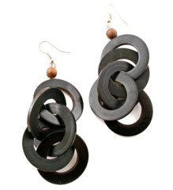
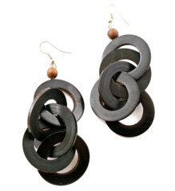
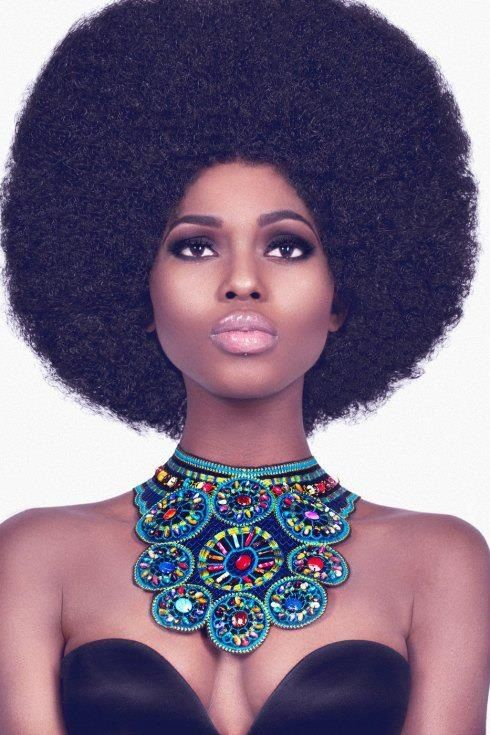
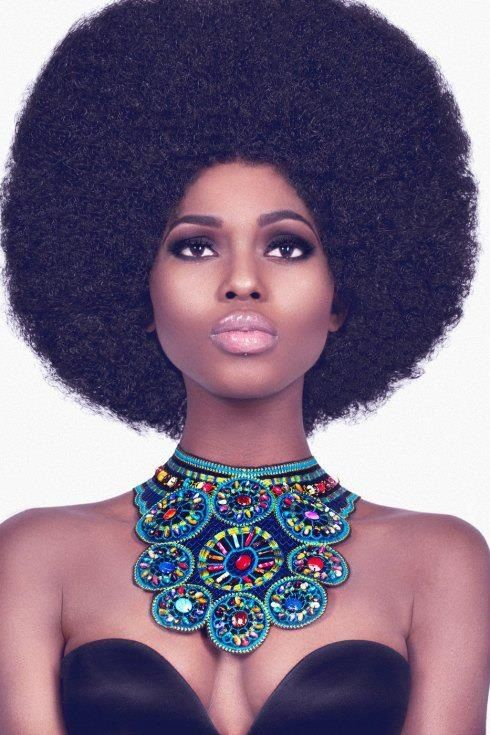

Miles ahead offers community services that em
Miles Ahead teaches the art of making jewellery to women and young girls.We then source for market for these products through word of mouth and Social media platfoams. There are shops in several places includin Kibera,Madhare,Kajiado,Namanga and Mtwapa, where some of the products are displayed for people to buy and also place their orders.
We have professional therapists that visit our women and girls to talk to them about their well being and get to listen to them, because sometimes all we need is a listening ear.
A healthy woman is a healthy nation,so we make sure that their mental health is a priority too.
We try to be as unique as possible and the products are of the best quality in that they last long to serve you better and longer.You will come with your desired designs and we will make themto your satisfaction.
Just like we value the people we work with,we also value our customers and potential customers.We make sure you are very comfortable while you visit.We have highly skilled sales persons who will tend to your needs without discrimination or prejudice. If your product is damaged,we will fix them for free as long as they were bought from us.Our trade mark is "smile"..You will be welcomed with a smile that will make you feel at home because we want to make our customers,feel comfortable with us.



 


 

Some of the products above are made using machines that cut, shape and smoothen the raw materials, eg bones and horns, then after, the products are designed by hand and are ready to be worn on different occassions. Join us so that we can make a difference together!